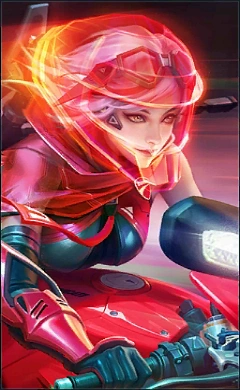

The bio of Benedetta, the 100th hero who is known as "Shadow Ranger" is unveiled for the first time. Under the Rantha Mountains, her ""Alecto"" symbolizes both honor and vengeance. ” —Benedetta bio publicity blurb[8] After the Abyss returned, our land becomes plagued and the entire southern part of the Land of Dawn turns into a barren place. Though the high Rantha Mountains blocks the corruption of the Abyss, Mother Nature in the southern realm continues to wither away. This once prosperous land is now nothing but a silent place filled with death, and people call it the “Despair Place”. The only passage that connects the Moniyan Empire is broken, separating the trapped refugees and the exiled wanderers from the rest of the world. They now live in fear and despair, haunted by monsters, yet still struggling to survive. For these people, the name of Benedetta brings hope and a sense of security. This courageous, persevering female ranger leads a team and fights in the land south to the Rantha Mountains, protecting the scattered settlement set up by the last survivors in the Despair Place. This is the fourth year ever since Benedetta and her team started their campaign in the Rantha region. Whenever she draws “Alecto”, the rampaging monsters will scatter in fear of this long sharpened sword infused with unstoppable power. People call her the Ranger Leader who walks in the shadow, Protector of the Despair Place. She has earned everyone’s admiration of respect in this desolate wasteland.
Fun Fact: Benedetta is officially the 100th hero released in Mobile Legends: Bang Bang, and she was given away completely for free to all players upon her release. she is also commonly called a poision pick